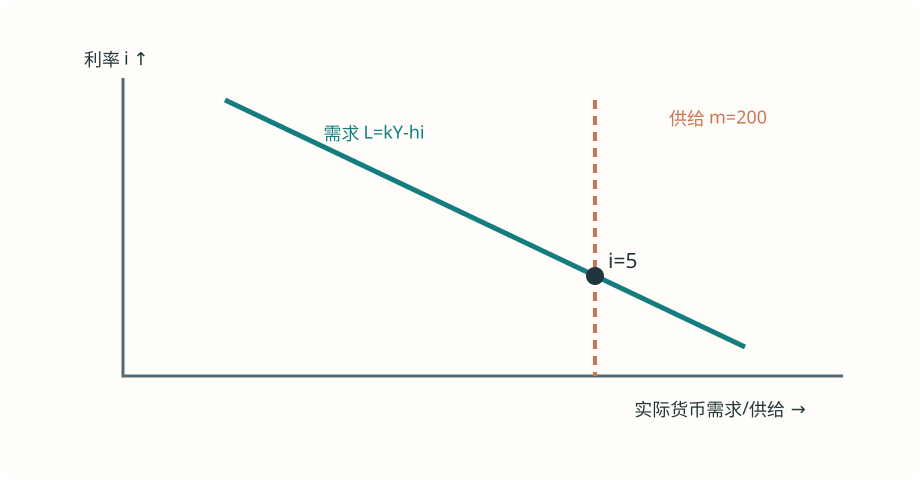
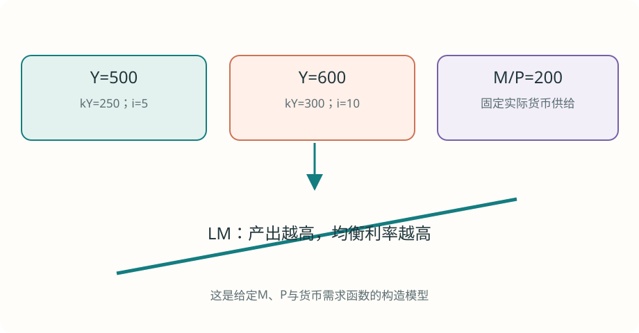
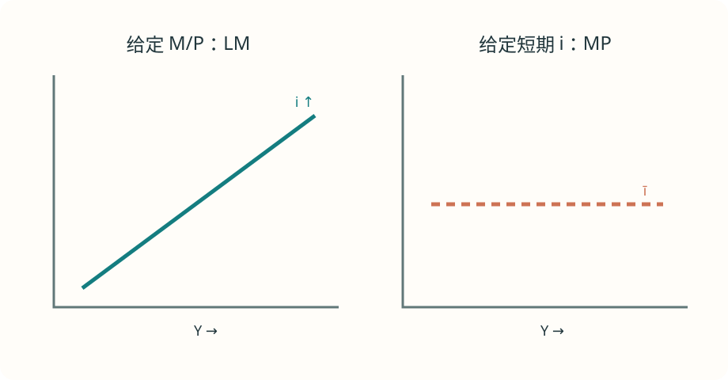
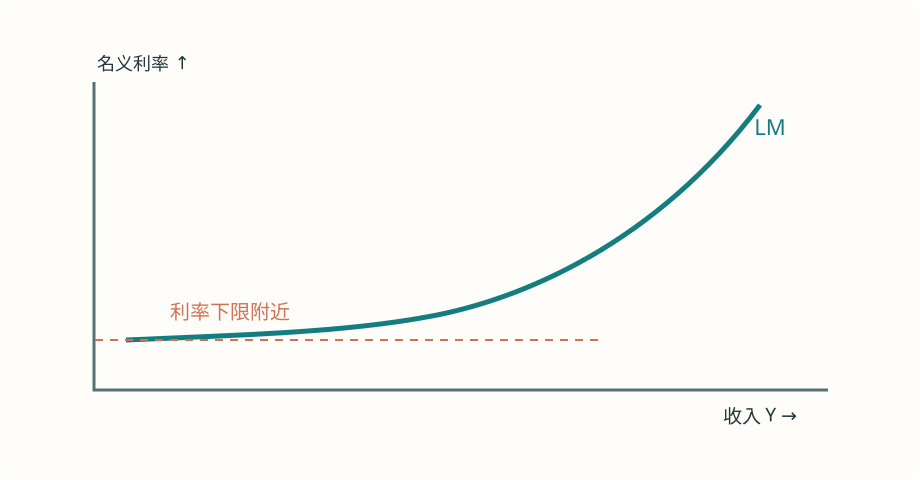

货币市场与 LM 曲线
交易规模扩大时，为什么固定实际货币供给的模型会要求更高利率？进一步解释为什么现代利率操作不能被旧 LM 图机械替代。
货币需求是想持有多少流动资产，不是想借多少贷款
家庭与企业为了交易、应急与资产组合配置，会持有现金或银行账户余额。当生产和交易规模扩大时，满足这些需要的货币需求可能更高。持有不付息或低息货币还意味着放弃其他资产的收益，因此其需求会受到利率影响。凯恩斯式流动性偏好模型用收入与利率概括这种权衡。

从货币市场均衡逐步得到 LM
假设实际货币需求 L(Y,i)=kY−hi，其中 k>0 为交易量敏感度，h>0 为利率敏感度，i 是名义持币机会成本对应的短期利率。给定物价 P 和传统模型中的名义货币供给 M，实际货币供给是 m=M/P。货币市场均衡要求 m=kY−hi。

取构造参数 k=0.5、h=10、m=200，Y=500 时货币需求中收入项为 250，均衡名义利率为 (250−200)/10=5 个百分点；Y 升至 600 时利率为 10。下方实验可以同步观察不同 Y 和实际货币余额下 LM 与 MP 的差别。
LM 沿曲线运动和货币供给冲击有何不同
在同一 LM 上移动：实际货币余额和价格固定，Y 上升使均衡利率上升。LM 整体移动：若价格不变而外生 M 增加，则在每个给定 Y 下使均衡 i 降低，LM 向下/向右移动。若价格上升而 M 不变，实际余额 M/P 减少，LM 向上/向左移动。
经典 LM 与利率目标 MP 对照
k=0.5，h=10；经典 LM 的 r 值实际是模型名义利率 i。MP 是固定政策利率的局部示意，不等于所有现代利率规则。
现代央行为什么通常不是只盯 M 画一条 LM
现实中央银行在不同制度下通过政策利率目标、准备金账户利息、公开市场操作和常备便利等工具影响短期市场利率。以美国联储的充裕准备金框架为例，主要通过管理利率而非每日精细调整准备金总量控制联邦基金利率。经典 LM 把货币供给固定再由货币需求决定利率，不能被描述为该制度下央行每天实际执行的控制算法。

现代简单课堂中可把给定政策利率画成水平 MP 线；如果把通胀、产出缺口纳入央行反应函数，MP 也可能随经济状态变化而不是永远水平。**同一幅图里的利率变量还必须保持一致**：LM 货币需求通常涉及名义利率 i，而 IS 投资使用预期实际利率 r，只有在预期通胀被固定等额外假设下才便于把两者简化为同一个利率变量。
流动性陷阱不意味着所有货币政策失去作用
当短期名义利率接近有效下限时，人们可能愿意多持有流动资产，传统通过降低短端名义利率刺激投资的空间受到限制。简化流动性偏好图可能表现为 LM 在某一区域非常平坦。这不意味着所有资产价格、预期、信贷与政策渠道都停摆：前瞻指引、长期资产购买、流动性和信贷工具仍可在特定环境下影响条件和行为，效果需要单独检验。

来源与证据
资料用于核对概念和制度口径；所有图示数值为构造案例，不能作为实际经济数据使用。
- 美联储货币政策：充裕准备金与利率控制 · ample reserves framework
- 纽约联储：政策实施与市场利率 · current operational tools
- 美联储：在近零利率下的政策替代工具 · forward guidance, purchases
- 联储历史资料：IS–LM 简化模型持有利率与价格预期不变 · simplified model conventions